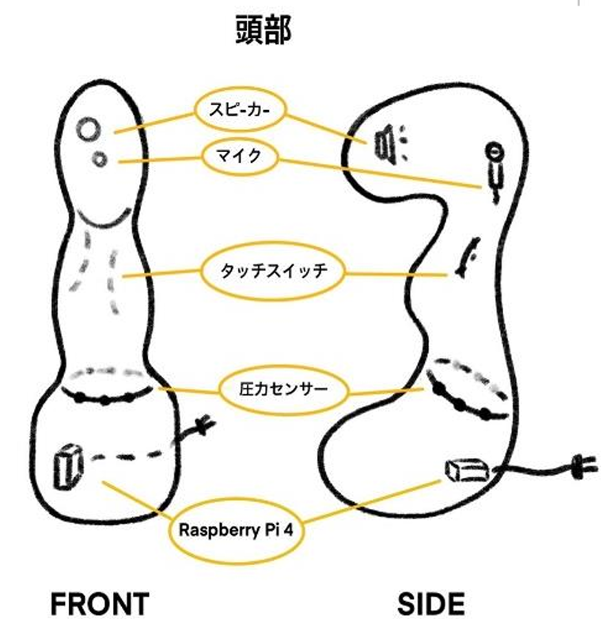
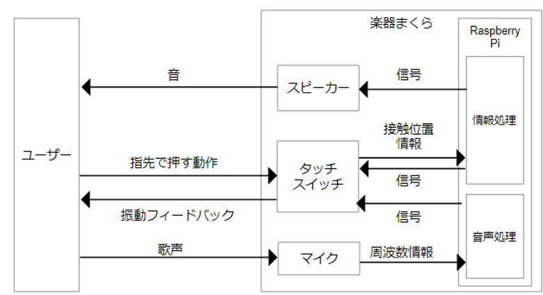
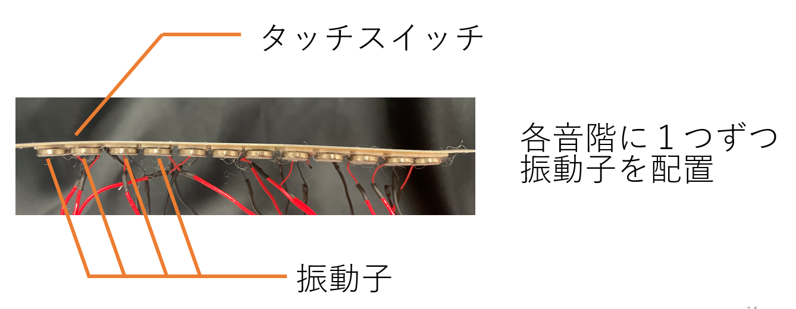
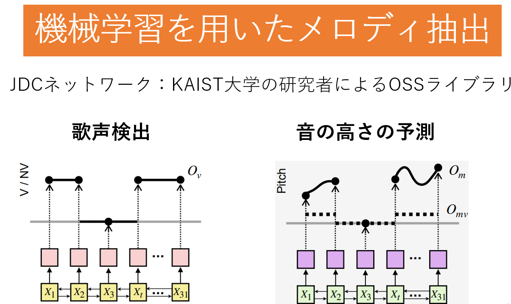
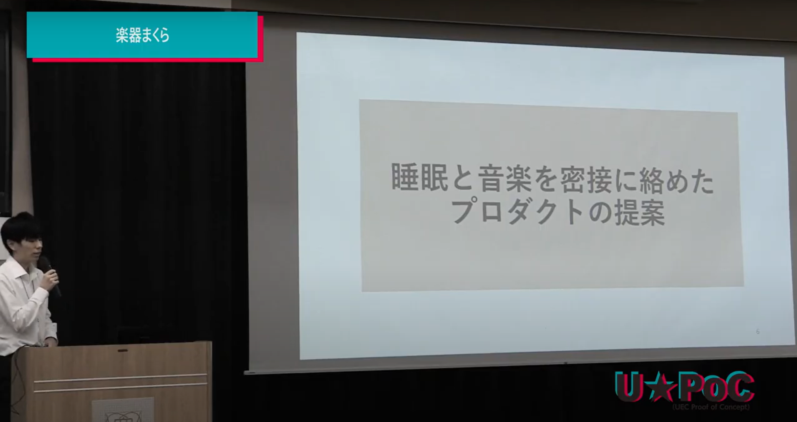

Selected project · Physical computing
GakkiMakura — Musical Pillow
A pillow-shaped musical interface that combines touch, pressure, sound, and vibration.
Idea design · Hardware · Software

Concept
GakkiMakura explores a screen-free musical activity before bedtime. It was designed to offer a playful alternative to smartphone use through physical interaction.
Interaction and implementation
Touch-position sensors map finger position to musical pitch, while pressure sensors detect compression and add sound effects. A machine-learning component analyzes humming, and vibration feedback indicates finger positions for interaction in the dark.
My contribution
I contributed to idea development and the hardware and software implementation of the musical pillow prototype.




Prototype and demonstration
